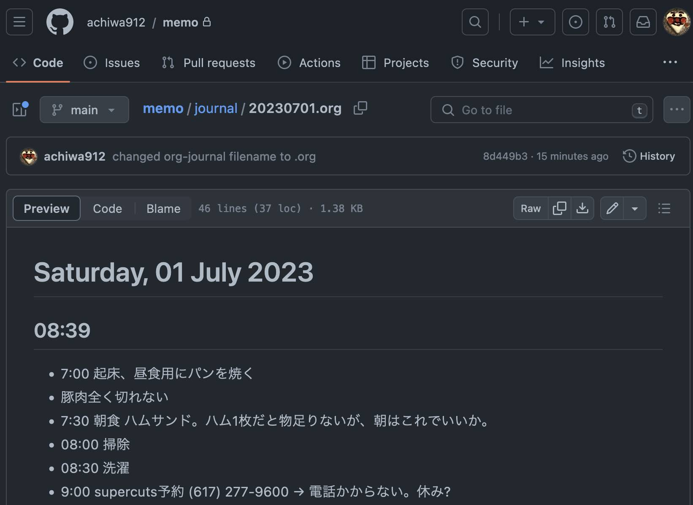

Table of Contents
1. はじめに
禍津神Elon MuskのおかげでTwitterが迷走しています。3rd partyのアプリが使えなくなって以来、私はTwitterにほとんどアクセスしなくなりましたが、時には誰も聞いていないとはわかっていても呟いてみたい気分になることがあります。
ふと、そんな時にemacsのorg-journalが代わりになるのでは、と思い立ち、使ってみることにしました。
2. org-journal
org-journal は名前の通り、ジャーナルを書くためのemacsのメジャーモードです。私はglobalに C-c j でorg-journalが起動するようにしてみました。init.elには以下を追記しています。
(use-package org-journal :ensure t :defer t :custom (org-journal-dir "~/py/memo/journal") (org-journal-date-format "%A, %d %B %Y") (org-journal-file-format "%Y%m%d.org") (org-journal-file-type 'monthly)) (global-set-key (kbd "C-c j") 'org-journal-new-entry)
- ジャーナルファイルはgithubのプライベートレポジトリに同期するようにしました。
- githubがorgファイルと認識するように、ファイル名に
.orgを付けるようにしました。 - 月ごとにファイルを作成するように指定しています。
M-x package-list-packages などから手動でインストールしないといけないかも。
何か思い立った時に C-c j を押すと画面が2分割されてジャーナルファイルが開き、 言いたいことを追記していくことができます。画面が完全に切り替わるのではなく、画面の下にorg-journalが開くところがよいです。書いたらすぐに C-x 0 で下のorg-journal画面を閉じるだけ。これ、滅茶苦茶便利です。操作が面倒だと書き込もうという意欲が萎んでしまいますが、ほぼノーストレスです。
しかも、私の環境ではgithubに同期しているので、(commit > push すれば)スマホ等のデバイスからもアクセスできます。いや〜、便利です。こんな感じにレンダリングされます。 
基本的なキーバインド:
C-c C-f/C-c C-b: 次/前のjournalファイルに移動C-c C-j: エントリー追加(org-journal-new-entry)C-u C-c C-j: エントリー追加せずにjournalファイルを開くC-c C-s: journalを検索
3. 王様の耳はロバの耳
だれも読んでいないとはわかっていても、Twitterは世界に向けて公開しています。org-journalで代わりが務まるのでしょうか。そもそもは全く異なる目的のものですし。
まあ、仮にTwitterの代わりにはならないとしても、org-journalはそれ自体とてもよくできていると思います。私はこれまで日記の類が全く続きませんでしたが、これは続くでしょうか。。。
。。。しばらく使ってみましたが、メモ代わりにとても重宝しています。結局、twitterの代わりにはあまりならないかな。